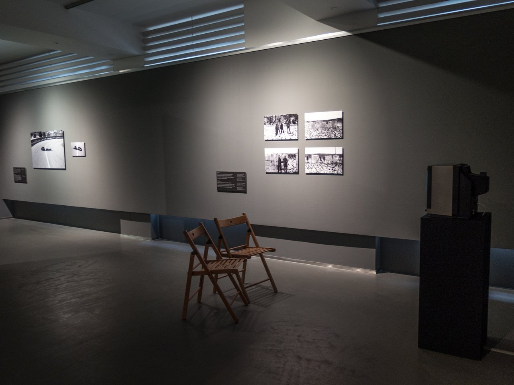

04. 10. 2024–08. 11. 2024
Il primo capitolo del Fotograf Festival presenta il lavoro di due artisti: Paul Chaney e Genti Korini.
Galleria fotografica
Indirizzo
Jungmannova 7, 110 00, Nové Město, Praga 1

L'artista britannico Paul Chaney ha iniziato a preparare la sua vasta installazione Donetsk Syndrome Diagrammatic nel 2017 durante il suo soggiorno in
Ucraina. Il film presenta un'affascinante conversazione tra un artista e un critico sul rapporto tra l'arte moderna, con la sua preferenza
per l'arte astratta e l'individualismo, e la nozione socialista del "nuovo umano" e del realismo artistico come opposizione all'arte borghese decadente.
Tra le rovine dell'architettura moderna si sviluppa questo avvincente dialogo, che non ha perso nulla della sua attualità, accompagnato da fotografie
iconiche di architettura modernista. Il testo è basato sugli scritti dello storico dell'arte albanese Alfred Uçi.
Curatori: Noemi Smolík e Adam Vačkář
Sito
www.fotografgallery.cz